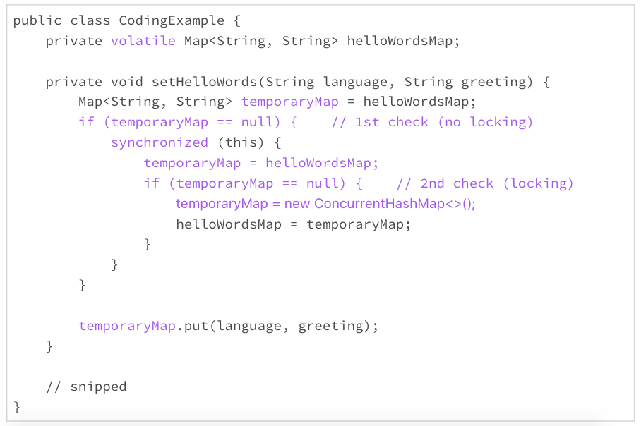

- 00 开篇词 你写的每一行代码，都是你的名片.md
- 01 从条件运算符说起，反思什么是好代码.md
- 02 把错误关在笼子里的五道关卡.md
- 03 优秀程序员的六个关键特质.md
- 04 代码规范的价值：复盘苹果公司的GoToFail漏洞.md
- 05 经验总结：如何给你的代码起好名字？.md
- 06 代码整理的关键逻辑和最佳案例.md
- 07 写好注释，真的是小菜一碟吗？.md
- 08 写好声明的“八项纪律”.md
- 09 怎么用好Java注解？.md
- 10 异常处理都有哪些陷阱？.md
- 11 组织好代码段，让人对它“一见钟情”.md
- 12丨组织好代码文件，要有“用户思维”.md
- 13 接口规范，是协作的合约.md
- 14 怎么写好用户指南？.md
- 15 编写规范代码的检查清单.md
- 16丨代码“规范”篇用户答疑.md
- 17 为什么需要经济的代码？.md
- 18丨思考框架：什么样的代码才是高效的代码？.md
- 19 怎么避免过度设计？.md
- 20 简单和直观，是永恒的解决方案.md
- 21 怎么设计一个简单又直观的接口？.md
- 22丨高效率，从超越线程同步开始！.md
- 23 怎么减少内存使用，减轻内存管理负担？.md
- 24 黑白灰，理解延迟分配的两面性.md
- 25 使用有序的代码，调动异步的事件.md
- 26 有哪些招惹麻烦的性能陷阱？.md
- 27 怎么编写可持续发展的代码？.md
- 28 怎么尽量“不写”代码？.md
- 29 编写经济代码的检查清单.md
- 30丨“代码经济篇”答疑汇总.md
- 31 为什么安全的代码这么重要？.md
- 32 如何评估代码的安全缺陷？.md
- 33 整数的运算有哪些安全威胁？.md
- 34 数组和集合，可变量的安全陷阱.md
- 35 怎么处理敏感信息？.md
- 36 继承有什么安全缺陷？.md
- 37 边界，信任的分水岭.md
- 38 对象序列化的危害有多大？.md
- 39 怎么控制好代码的权力？.md
- 40 规范，代码长治久安的基础.md
- 41 预案，代码的主动风险管理.md
- 42 纵深，代码安全的深度防御.md
- 43 编写安全代码的最佳实践清单.md
- 44 “代码安全篇”答疑汇总.md
- Q&A加餐丨关于代码质量，你关心的那些事儿.md
- 结束语 如何成为一个编程好手？.md
24 黑白灰，理解延迟分配的两面性
上一次，我们讨论了减少内存使用的两个大方向，减少实例数量和减少实例的尺寸。如果我们把时间的因素考虑在内，还有一些重要的技术，可以用来减少运行时的实例数量。其中，延迟分配是一个重要的思路。
延迟分配
在前面讨论怎么写声明的时候，为了避免初始化的遗漏或者不必要的代码重复，我们一般建议“声明时就初始化”。但是，如果初始化涉及的计算量比较大，占用的资源比较多或者占用的时间比较长，声明时就初始化的方案可能会占用不必要的资源，甚至成为软件的一个潜在安全问题。
这时候，我们就需要考虑延迟分配的方案了。也就是说，不到需要时候，不占用不必要的资源。
下面，我们通过一个例子来了解下什么是延迟分配，以及延迟分配的好处。
在Java核心类中，ArrayList是一个可调整大小的列表，内部实现使用数组存储数据。它的优点是列表大小可调整，数组结构紧凑。列表大小可以预先确定，并且在大小不经常变化的情况下，ArrayList要比LinkedList节省空间，所以是一个优先选项。
但是，一旦列表大小不能确定，或者列表大小经常变化，ArrayList的内部数组就需要调整大小，这就需要内部分配新数组，废弃旧数组，并且把旧数组的数据拷贝到新数组。这时候，ArrayList就不是一个好的选择了。
在JDK 7中，ArrayList的实现可以用下面的一小段伪代码体现。你可以从代码中体会下内部数组调整带来的“酸辣”。
package java.util;
public class ArrayList<E> extends AbstractList<E>
implements List<E>, RandomAccess, Cloneable, java.io.Serializable {
private transient Object[] elementData;
private int size;
public ArrayList() {
this.elementData = new Object[10];
}
@Override
public boolean add(E e) {
ensureCapacity(size + 1);
elementData[size++] = e;
return true;
}
private void ensureCapacity(int minCapacity) {
int oldCapacity = elementData.length;
if (minCapacity > oldCapacity) {
Object oldData[] = elementData;
int newCapacity = (oldCapacity * 3) / 2 + 1;
if (newCapacity < minCapacity) {
newCapacity = minCapacity;
}
elementData = Arrays.copyOf(elementData, newCapacity);
}
}
}
这段代码里的缺省构造方法，分配了一个可以容纳10个对象的数组，不管这个大小合不合适，数组需不需要。这看似不起眼的大小为10的数组，在高频率的使用环境下，也是一个不小的负担。
在JDK 8中，ArrayList的实现做了一个小变动。这个小变动，可以用下面的一小段伪代码体现。
package java.util;
public class ArrayList<E> extends AbstractList<E>
implements List<E>, RandomAccess, Cloneable, java.io.Serializable {
private static final Object[] DEFAULTCAPACITY_EMPTY_ELEMENTDATA = {};
private transient Object[] elementData;
private int size;
public ArrayList() {
this.elementData = DEFAULTCAPACITY_EMPTY_ELEMENTDATA;
}
// snipped
}
改动后的缺省构造方法，不再分配内部数组，而是使用了一个空数组。要等到真正需要存储数据的时候，才为这个数组分配空间。这就是所谓的延迟初始化。
这么小的变动带来的好处到底有多大呢？这个改动的报告记录了一个性能测试结果，改动后的内存的使用减少了13%，平均响应时间提高了16%。
你是不是很吃惊这样的结果？这个小改动，看起来真的不起眼。代码的优化对于性能的影响，有时候真的是付出少、收益大。
从ArrayList的上面的改动，我们能够学习到什么东西呢？我学到的最重要的东西是，对于使用频率高的类的实现，微小的性能改进，都可以带来巨大的实用价值。
在前面讨论怎么写声明的时候，我们讨论到了“局部变量需要时再声明”这条原则。局部变量标识符的声明应该和它的使用尽可能地靠近。这样的规范，除了阅读方面的便利之外，还有效率方面的考虑。局部变量占用的资源，也应该需要时再分配，资源的分配和它的使用也要尽可能地靠近。
延迟初始化
延迟分配的思路，就是用到声明时再初始化，这就是延迟初始化。换句话说，不到需要的时候，就不进行初始化。
下面的这个例子，是我们经常使用的初始化方案，声明时就初始化。
public class CodingExample {
private final Map<String, String> helloWordsMap = new HashMap<>();
private void setHelloWords(String language, String greeting) {
helloWordsMap.put(language, greeting);
}
// snipped
}
声明时就初始化的好处是简单、直接、代码清晰、容易维护。但是，如果初始化占用的资源比较多或者占用的时间比较长，这个方案就有可能带来一些负面影响。我们就要慎重考虑了。
在JDK 11之前的Java版本中，按照HashMap类构造方法的内部实现，初始化的实例变量helloWordsMap，要缺省地分配一个可以容纳16个对象的数组。这个缺省的数组尺寸，比JDK 7中的ArrayList缺省数组还要大。如果后来的方法使用不到这个实例变量，这个资源分配就完全浪费了；如果这个实例变量没有及时使用，这个资源的占用时间就拉长了。
这个时候是不是可以考虑延迟初始化？下面的例子，就是一种延迟初始化的实现方法。
public class CodingExample {
private Map<String, String> helloWordsMap;
private void setHelloWords(String language, String greeting) {
if (helloWordsMap == null) {
helloWordsMap = new HashMap<>();
}
helloWordsMap.put(language, greeting);
}
// snipped
}
上面的例子中，实例变量helloWordsMap只有需要时才初始化。这的确可以避免内存资源的浪费，但代价是要使用更多的CPU。检查实例变量是否已经能初始化，需要CPU的额外开销。这是一个内存和CPU效率的妥协与竞争。
而且，除非是静态变量，否则使用延迟初始化，一般也意味着放弃了使用不可变的类可能性。这就需要考虑多线程安全的问题。上面例子的实现，就不是多线程安全的。对于多线程环境下的计算，初始化时需要的线程同步也是一个不小的开销。
比如下面的代码，就是一个常见的解决延迟初始化的线程同步问题的模式。这个模式的效率，还算不错。但是里面的很多小细节都忽视不得，看起来都很头疼。我每次看到这样的模式，即便明白这样做的必要性，也恨不得先休息半天，再来啃这块硬骨头。
public class CodingExample {
private volatile Map<String, String> helloWordsMap;
private void setHelloWords(String language, String greeting) {
Map<String, String> temporaryMap = helloWordsMap;
if (temporaryMap == null) { // 1st check (no locking)
synchronized (this) {
temporaryMap = helloWordsMap;
if (temporaryMap == null) { // 2nd check (locking)
temporaryMap = new ConcurrentHashMap<>();
helloWordsMap = temporaryMap;
}
}
}
temporaryMap.put(language, greeting);
}
// snipped
}
延迟初始化到底好不好，要取决于具体的使用场景。一般情况下，由于规范性带来的明显优势，我们优先使用“声明时就初始化”这个方案。
所以，我们要再一次强调，只有初始化占用的资源比较多或者占用的时间比较长的时候，我们才开始考虑其他的方案。复杂的方法，只有必要时才使用。
※注：从JDK 11开始，HashMap的实现做了改进，缺省的构造不再分配实质性的数组。以后我们写代码时，可以省点心了。
小结
今天，我们主要讨论了怎么通过延迟分配减少实例数量，从而降低内存使用。
对于局部变量，我们应该坚持“需要时再声明，需要时再分配”的原则。
对于类的变量，我们依然应该优先考虑“声明时就初始化”的方案。如果初始化涉及的计算量比较大，占用的资源比较多或者占用的时间比较长，我们可以根据具体情况，具体分析，采用延迟初始化是否可以提高效率，然后再决定使用这种方案是否划算。
一起来动手
我上面写的延迟初始化的同步的代码，其实是一个很固定的模式。对于Java初学者来说，理解这段代码可能需要费点功夫。评审代码的时候，每次遇到这个模式，我都要小心再小心，谨慎再谨慎，生怕漏掉了某个细节。
借着这个机会，我们一起来把这个模式理解透，搞清楚这段代码里每一个变量、每一个关键词扮演的角色。以后遇到它，我们也许可以和它把手言欢。
我把这段代码重新抄写在了下面，关键的地方加了颜色。我们在讨论区讨论下面这些问题：
helloWordsMap变量为什么使用volatile限定词？
为什么要temporaryMap变量？
temporaryMap变量为什么要两次设置为helloWordsMap？
为什么要检查两次temporaryMap的值不等于空？
synchronized为什么用在第一次检查之后？
为什么使用ConcurrentHashMap而不是HashMap？
为什么使用temporaryMap.put()而不是helloWordsMap.put()？
如果你有更多的问题，请公布在讨论区，也可以和你的朋友一起讨论。弄清楚了这些问题，我相信我们可以对Java语言的理解更深入一步。

© 2019 - 2023 Liangliang Lee. Powered by gin and hexo-theme-book.